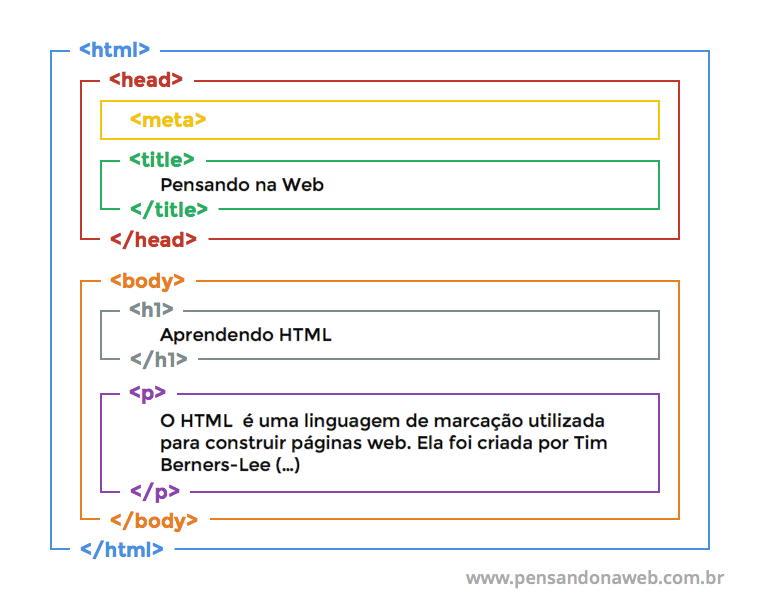

Aprender a instalar e configurar o ambiente de desenvolvimento. Entender o funcionamento do inspetor de elementos do navegador e criar sua primeira página HTML.
Se você trabalha com muitos sites, provavelmente, está sempre em busca de maneiras mais rápidas e eficientes de fazer as coisas. Nesse caso, a ferramenta para inspecionar elemento, disponível na maioria dos principais navegadores, pode ser um recurso útil para ter em mãos. Com ela, você pode identificar rapidamente as classes CSS, visualizar alterações em elementos de uma página, simular um site em dispositivos móveis e muito mais. Neste artigo, vamos apresentar a ferramenta de inspecionar e, ainda, ensinar como acessá-la nos navegadores web mais populares. Veja, a seguir, como você pode usá-la como parte de seu fluxo de trabalho de desenvolvimento web.
A ferramenta de inspecionar elemento é um utilitário que permite visualizar o código-fonte subjacente de qualquer página web. Além disso, você pode usá-la para fazer alterações temporárias e ver os resultados em tempo real, deixando o código-fonte original intacto. Isso é extremamente útil se você precisa testar uma alteração ou diagnosticar um problema. Também pode ser de grande valia se você encontrar um site com um recurso de que goste e estiver curioso para saber como ele foi implementado. A maioria dos principais navegadores, incluindo Chrome, Firefox e Safari, oferece algumas variações dessa ferramenta. Vamos ver como acessá-la em cada um deles.
Existem três maneiras de comoinspecionar elemento no Chrome.
O documento HTML sempre inicia com o que chamamos de estrutura básica. Esta estrutura é quase que imutável. Sempre será dessa forma e você sempre, sempre começará seu HTML começando por esse código. Geralmente os editores como o Sublime Text já tem atalhos para iniciar os documentos HTMLs com essa estrutura, logo, você não precisa se preocupar em decorá-la, mas é bom que faça. Veja abaixo como ela se inicia:

/As tags são usadas para informar ao navegador a estrutura do site. Ou
seja: quando se escreve um código em HTML, as tags serão interpretadas
pelo navegador, produzindo assim a estrutura e o conteúdo visual da
página. A principal característica das tags é estarem sempre dentro dos
sinais de chevron (sinal de “maior que” e “menor que”), ou seja: < >. As
tags HTML são divididas em dois tipos: as que precisam de fechamento e as
que não precisam de fechamento. As tags que precisam de fechamento possuem
a sintaxe
Os atributos são usados para personalizar as tags, modificando sua estrutura ou funcionalidade. Igualmente, os atributos são utilizados para atribuir uma classe ou id a um elemento. A maioria das tags tem seus próprios atributos. Contudo, existem alguns atributos genéricos que podem ser utilizados na maioria das tags HTML, vamos estudá-los:
// h1, h2, h3, h4, h5, p, i, u, strong, entre outros
Uma lista ordenada é delimitada pelas etiquetas <ol>
e </ol> (Ordered List). Cada item da lista é
delimitado pelas etiquetas <li> e
</li> (List Item).
A estrutura da lista não-ordenada é semelhante a da lista ordenada - porém, ao invés de ser construída com o elemento OL, é construída com o elemento UL (Unordered List).